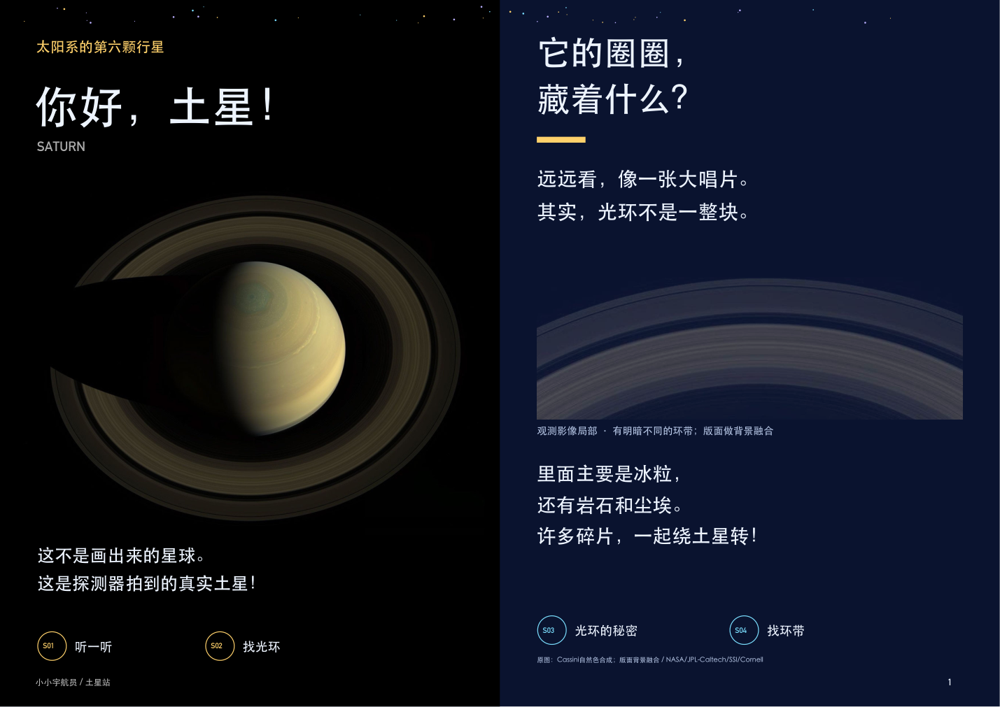
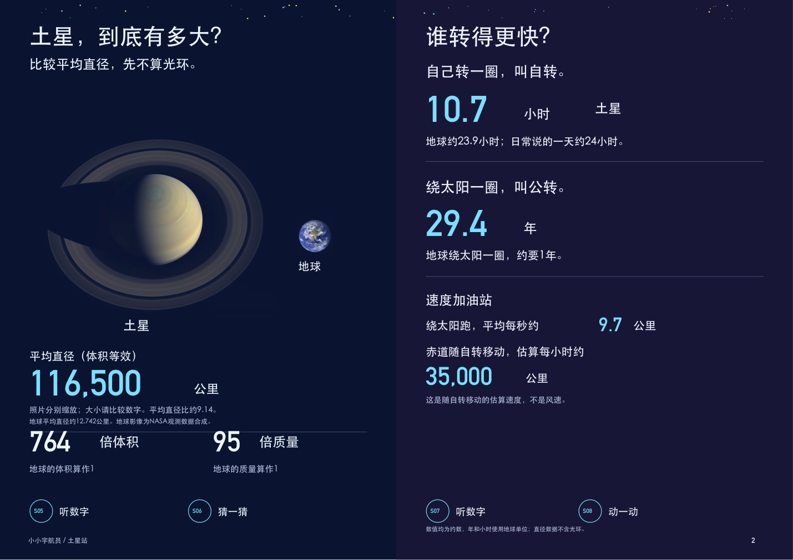
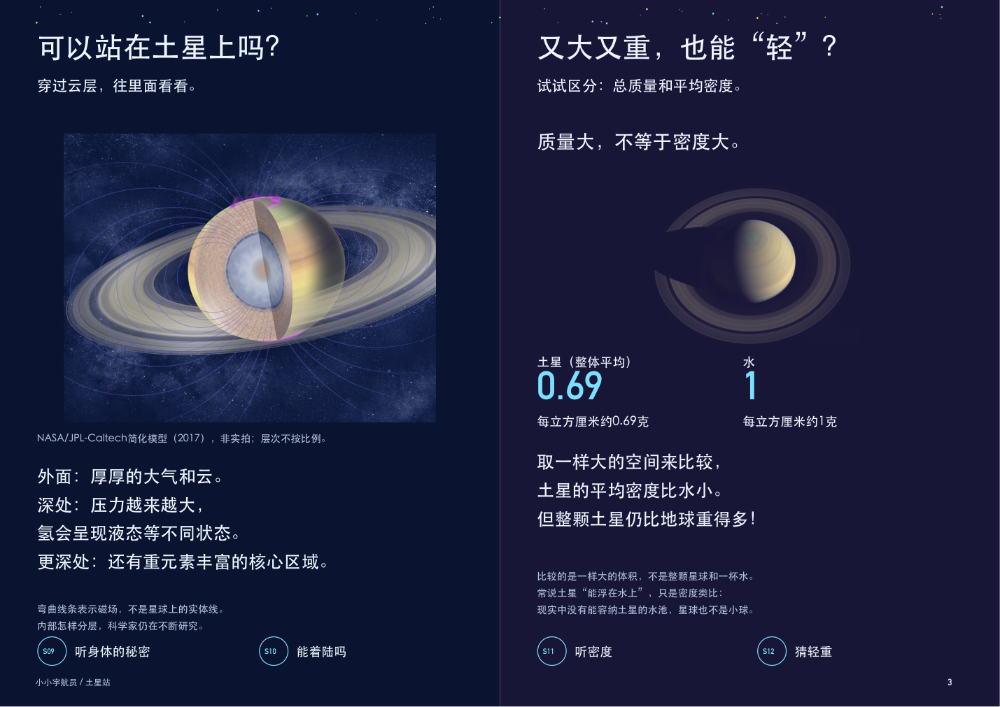
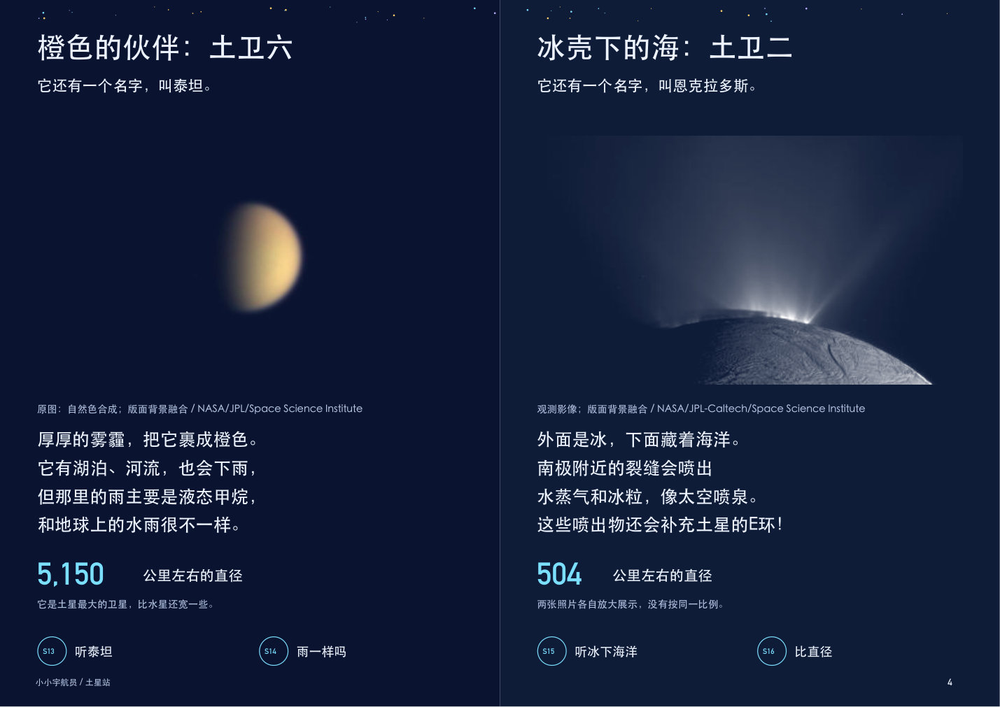
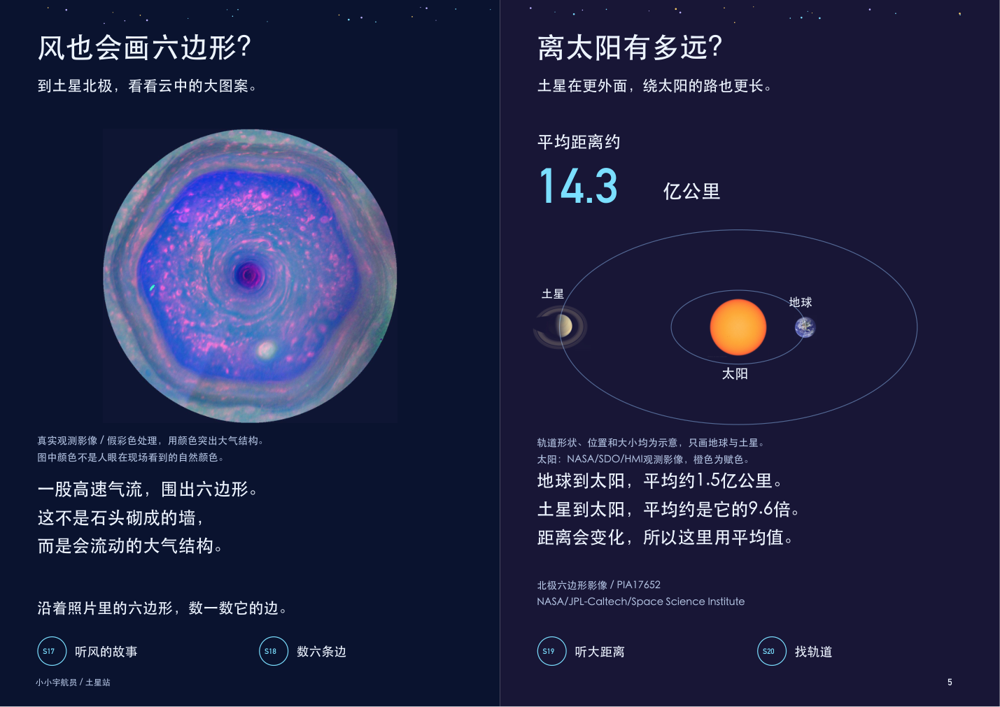
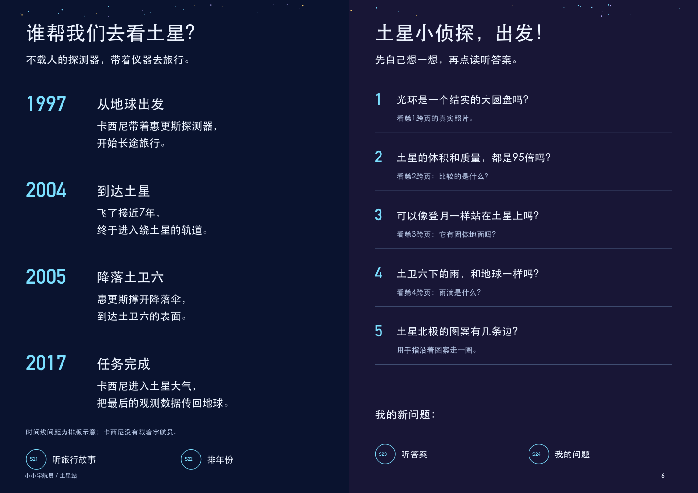

<!doctype html><html lang="zh"><meta charset="utf-8"><meta name="viewport" content="width=device-width,initial-scale=1"><title>土星样章 · A3真实照片版</title><style>body{margin:0;background:#070C20;font-family:system-ui;color:#EDF4FF}header{padding:24px 4%;display:flex;align-items:center;justify-content:space-between}a{color:inherit}main{max-width:1400px;margin:auto}img{display:block;width:100%;margin:0 0 30px}aside{padding:20px 4% 40px;font-size:14px;line-height:1.9}button{padding:10px 20px}@media print{header,aside{display:none}body{background:white}img{margin:0;break-after:page;width:420mm;height:297mm}@page{size:A3 landscape;margin:0}}</style><header><div><b>小小宇航员 · 土星</b>　A3 横向 / 6个跨页 · 12个阅读页 / 深空星光版</div><a href="土星样章_A3真实照片版.pdf">打开印刷PDF</a></header><main></main><aside>6个A3横向跨页，对折单页A4。点读位S01—S24为内容编号，尚未绑定实际贴纸或音频。<br>图片使用NASA观测影像及注明的科学模型；地球Blue Marble为观测数据合成。图片分别缩放，不可按图测量大小比例。版面采用背景融合，显示颜色会受底色影响。<br>原始影像：<a href="https://science.nasa.gov/photojournal/jewel-of-the-solar-system/">土星</a> / <a href="https://science.nasa.gov/resource/blue-marble-2002/">地球</a> / <a href="https://science.nasa.gov/resource/saturn-interior-cutaway-illustration/">内部模型</a> / <a href="https://science.nasa.gov/photojournal/titan-in-natural-color/">土卫六</a> / <a href="https://science.nasa.gov/saturn/moons/enceladus/">土卫二</a> / <a href="https://science.nasa.gov/resource/saturns-streaming-hexagon-storm/">六边形假彩色影像</a>。<br>数据来源：<a href="https://nssdc.gsfc.nasa.gov/planetary/factsheet/saturnfact.html">NASA数值表</a>；口径和审校记录见配套说明。土卫六原始影像分辨率较低，放大后较柔软，不能把插值放大视为新增细节。<br>本文件是阅读样张，尚未做整本装订拼版、出血和实物印刷打样。</aside></html>